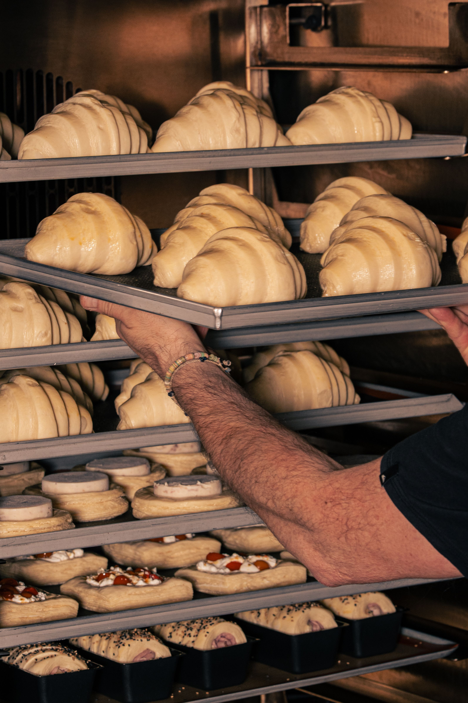

La baguette traditionnelle
Cette recette transmise de génération en génération conserve son goût d'antant.
Depuis plus de 100 ans et la famille Dupont façonne votre pain avec passion. Nous n'arrêtons pas de nous adapter à l'évolution de la société tout en préservant la tradition des bonnes choses

Cette recette transmise de génération en génération conserve son goût d'antant.
Ce gâteau au chocolat en forme de citrouille raviera vos papilles.
Ne passez pas à côté de ces gourmandises qui accompagneront vos café à la perfection.